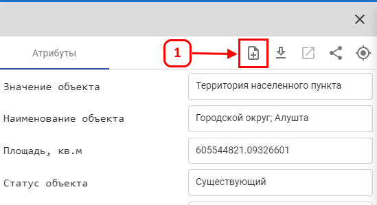
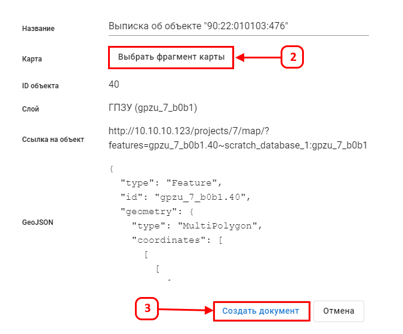
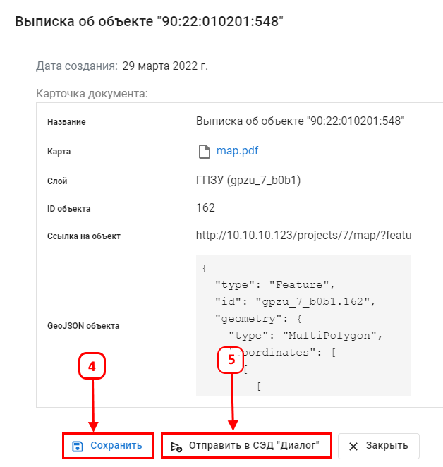

Для формирования выписки документа нажмите (1) для выбранного векторного объекта в панели атрибутов

Документ-выписка содержит:
В диалоговом окне выписки документа пользователю необходимо задать фрагмент карты (2) для векторного объекта, указанный документ можно создать (3).

Создается документ-выписка для указанного векторного объекта.

Выписку можно сохранить (4), отправить в СЭД "Диалог" (5).
Сохраненную выписку можно посмотреть в Управление данными −> Библиотеки документов −> Выписки объектов.